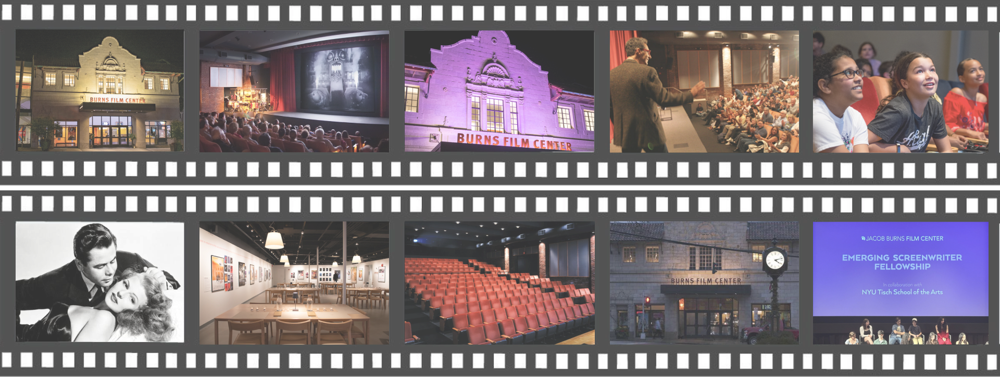
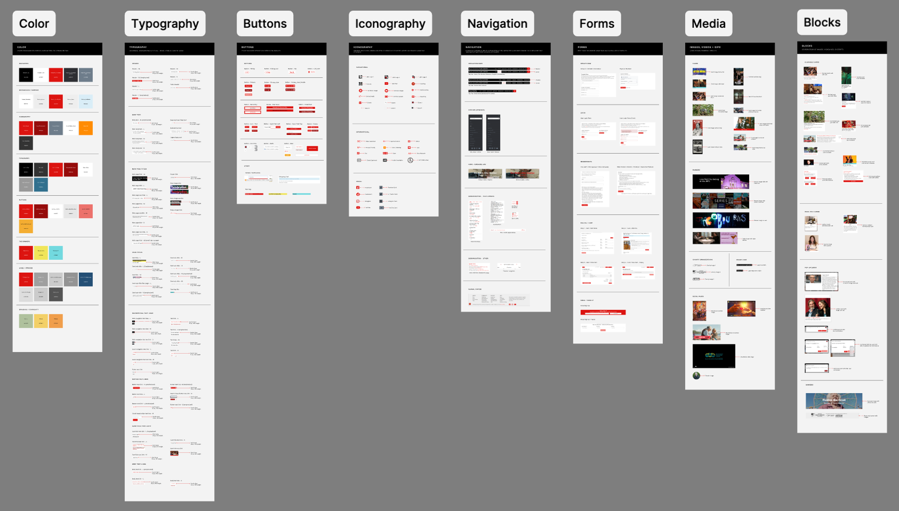
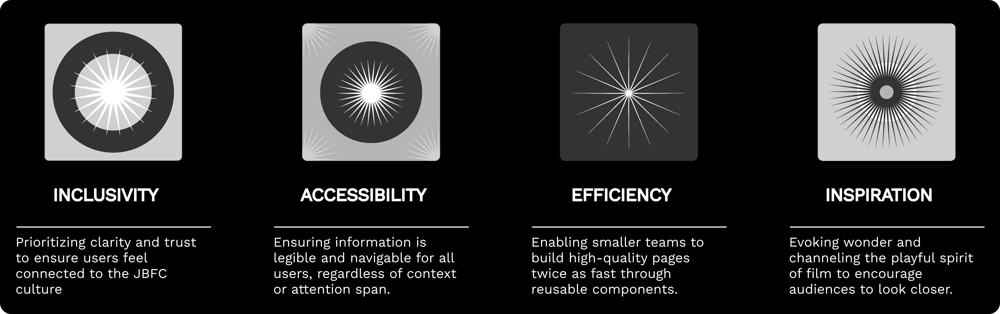
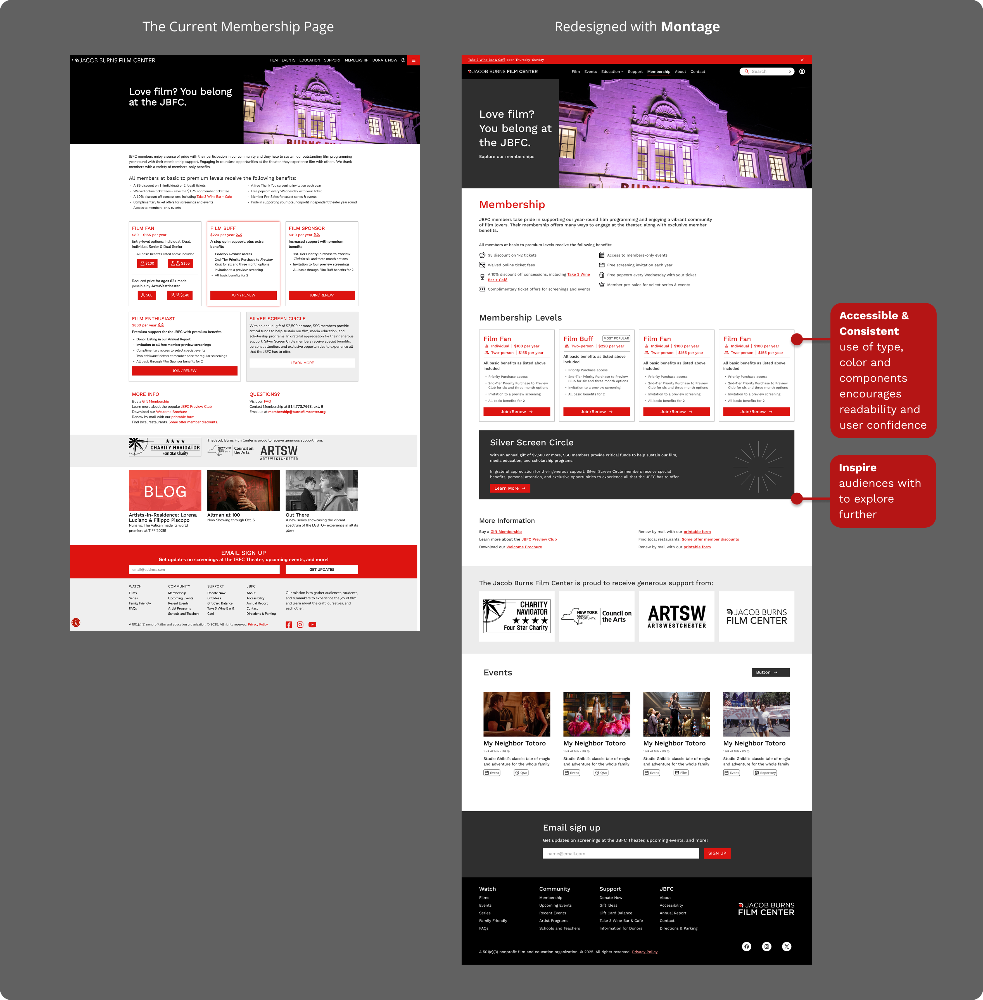
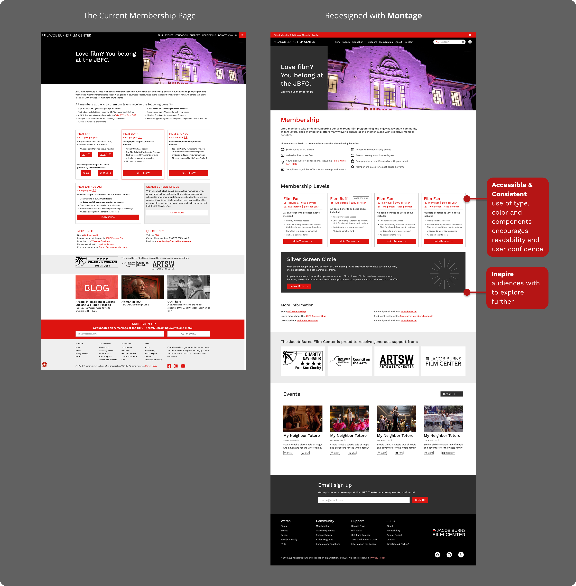

Design System
Montage
An accessible-first design system for the Jacob Burns Film Center.
Role
Lead Product Designer
Timeline
4 Months (2025)
Tools
Figma, Zeroheight, CSS
Team
4 Designers/Researchers
About the JBFC: The Jacob Burns Film Center is a non-profit cultural hub for film, education, and community. It is a place where film inspires people and where stories shape communities.
The Challenge
I led the design of Montage to solve a critical issue: inconsistency. Without a shared design system, the platform suffered from fragmented UI and accessibility gaps. An audit revealed:
- Visual Inconsistency: Dense content, minimal padding, and varying styles disrupted the reading flow.
- Fragmented UI: Navigation bars and buttons lacked consistent behaviors across pages.
- Repetitive Information: Redundant content in cards and tags led to user confusion.

Strategy
We established three strategic pillars to guide the development of Montage:
Consistency
Creating a cohesive experience where standardized patterns make every page feel intentional.
Efficiency
Enabling smaller teams to build high-quality pages twice as fast through reusable components.
Scalability
Allowing for future platform shifts and evolution without disrupting the user experience.
The Process
We approached Montage not just as a visual update, but as an infrastructure project. The process required balancing aesthetics with strict accessibility standards while simultaneously building documentation to ensure adoption.
01. UI Inventory & Audit
We started by dismantling the current site into its atomic parts. We cataloged every instance of typography, color, and form, identifying over 20 different shades of gray and inconsistent button styles. This inventory of atoms and molecules helped us understand the scope of debt we needed to address.
02. Semantic Design Tokens
To bridge the gap between design and engineering, we established a system of design tokens that mirrored CSS variables. Instead of just "Red," we mapped variables to semantic meanings (e.g., --color-action-destructive).

Figma Variables mapped to tokens
Live token docs in Zeroheight
03. Component Architecture & Variants
We leveraged Figma's Component Properties (Booleans, Instance Swaps, and Nested Variants) to create a flexible, maintainable library. By building a "master" component with toggleable properties, we reduced the number of detached instances and empowered designers to customize layouts safely.
Figma Customizability
Designers can insert an instance and toggle "Show Tag," swap "Description," or change "State" directly from the sidebar without detaching components.

04. Accessibility Validation
Every component was tested for keyboard accessibility and focus states. We balanced the playful aesthetic with strict WCAG compliance.
Automated contrast checking

Documented focus states
Design Principles
By building Montage, we set the foundation for a new culture at JBFC where every decision is guided by clear principles:
Documentation
We used Zeroheight to create a centralized "source of truth." This wasn't just a static PDF, but a living website that synced directly with Figma and our design tokens.
The Montage Knowledge Base
01. Getting Started
Onboarding guides for new designers and developers, including "How to use the Figma Library" and installation steps.
Accessibility Guidelines & Best Practices
Resources & Tools
02. Foundations
Core visual elements including Color Semantics, Typography scales, Spacing, and Grid systems.
Iconography categorized in sets
Typography Scale
03. Components
Interactive playground for buttons, cards, and inputs with "Do's and Don'ts" for usage.
Component Library Overview

Banner Component Anatomy
04. Support & Help
Contribution guidelines for the team to propose new patterns or report bugs.
Contribution contact information and resources
Pitching the System
To get buy-in from non-technical stakeholders at the JBFC, I demonstrated the system's value by showing the real impact Montage makes. I demonstrated how a landing page that used to take days could now be assembled in minutes.

Demo: Building a landing page in under 2 minutes.
The Montage Moment
The "Magic Moment" occurred when we applied the system to the core user journeys. Resulting in a Landing Page and Membership flow that felt both modern and distinctly JBFC.
The redesigned Homepage: Cleaner, bolder, and more accessible: The new Membership page: streamlined, visually engaging, and fully accessible:

The new Membership page: streamlined, visually engaging, and fully accessible:

Outcomes
With real user testing with designers we were able to make the system not only look better but perform better.
User Experience
Feedback from designers highlighted significant efficiency gains:
"It just works. I can build pages twice as fast."
Takeaways
Reflecting on the 4-month journey of building Montage, my biggest learnings went beyond just Figma and CSS.
Systems Thinking
I learned to shift my mindset from designing individual pages to creating scalable patterns that serve the whole ecosystem.
Advocacy is Key
A system is only successful if people use it. Pitching the value to stakeholders was just as important as the pixel-perfect design.
Inclusive by Default
Adding accessibility into an existing product can be tricky. Baking it into the core components from day one made the entire platform more robust.
"Design systems are culture change disguised as a UI kit."
— Lauren LoPrete